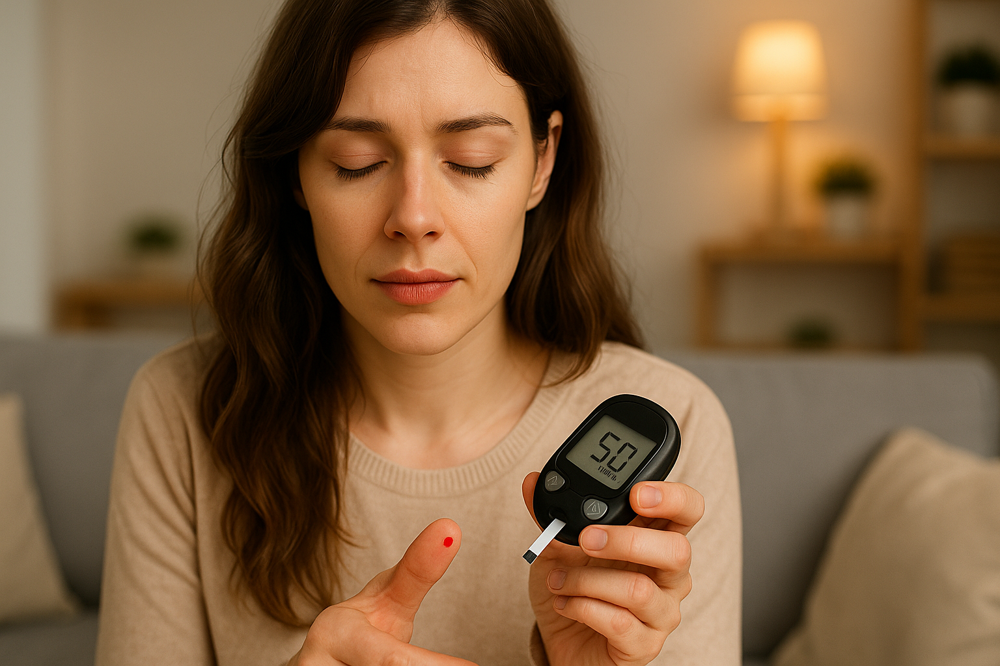

低血糖：中老年人的症状、危害、成因、注意事项、治疗方法及最新研究进展
低血糖（hypoglycemia，医学上也称为血糖过低）是指血液中的葡萄糖水平低于正常范围的情况mayoclinic.org。葡萄糖是人体主要的能量来源，血糖过低会影响身体和大脑的正常功能。一般而言，当血糖降至70 mg/dL（3.9 mmol/L）以下时，就属于低血糖，需要及时采取措施将血糖升高mayoclinic.org。低血糖常见于糖尿病患者，尤其是接受胰岛素或其他降糖药物治疗的人群，但也可能发生在非糖尿病人身上（虽然不常见）。中年人和老年人由于生理变化及慢性疾病等因素，更需要了解低血糖的相关知识，以便及时识别和处理。

图1：这张图展示了一位患者正在使用便携式血糖仪检测血糖。当血糖过低时，及时监测并发现低血糖非常重要，以便尽早采取纠正措施。定期自我监测是中老年糖尿病患者预防严重低血糖的重要手段。
常见症状
低血糖发作时，人体会出现一系列警示症状。典型症状包括心慌（心跳加快）、手抖、出汗、焦虑或紧张、易怒、头晕以及强烈的饥饿感cdc.govmayoclinic.org。有时还可能出现乏力、恶心、头疼，嘴唇或面部发麻等感觉mayoclinic.org。如果血糖继续下降，症状会加重，可能出现意识混乱、言语含糊不清、视物模糊、行动不协调，甚至在睡眠中被低血糖引发的噩梦惊醒mayoclinic.org。严重低血糖时（通常血糖低于54 mg/dL，即3.0 mmol/L），患者可能丧失意识（昏厥不醒）或发生抽搐惊厥mayoclinic.org。如果不及时救治，严重低血糖可能危及生命。
值得注意的是，中老年人在出现低血糖时，症状表现可能与年轻人有所不同。一些老年患者低血糖时不会出现典型的出汗、手抖、心跳加快等自主神经症状，而主要表现为乏力、头晕、精神恍惚或行为异常等，这些症状有时会被误以为是中风或老年痴呆的表现endocrinologyadvisor.com。这意味着老年人的低血糖有时不容易被察觉。此外，低血糖不知症（低血糖无意识）也是需要关注的问题。长期糖尿病患者如果反复发生低血糖，身体对低血糖的警示反应可能变得迟钝，以致血糖降到很低也不出现明显症状cdc.gov。服用某些药物（如用于高血压的β受体阻滞剂）也可能掩盖低血糖症状cdc.gov。对于这类缺乏症状提示的患者，低血糖更危险，因为他们可能在不知不觉中就发展到严重阶段cdc.gov。因此，中老年人尤其是糖尿病病程较长者，应熟悉自身低血糖的个人症状模式，必要时更频繁地监测血糖，以及时发现异常cdc.gov。
危害与风险
低血糖若未及时处理，会对中老年人的健康和安全造成多方面的危害。急性危害方面，严重低血糖会导致患者神志不清甚至昏迷抽搐，如不及时救治可危及生命mayoclinic.org。在血糖过低的情况下，大脑得不到足够的能量供应，可能引发癫痫样的发作或失去意识。此外，低血糖发作时的意识混乱和反应迟钝还可能导致意外事故。例如，患者在走路或上下楼时可能因为头晕虚弱而跌倒，造成骨折或外伤；若在驾驶车辆或操作机械时发生低血糖，则更容易引发交通事故或其他危险情况。
老年人对低血糖的耐受性更差，低血糖带来的意外伤害风险更高。据研究，即使轻度的低血糖发作，对于体质衰弱的老年人也可能是危险的，可能导致跌倒和骨折endocrinologyadvisor.com。一项社区研究发现，75岁以上的2型糖尿病老年患者中，经历过严重低血糖的人在一年内因跌倒而需要医疗处理的风险高达10%endocrinologyadvisor.com。反复的低血糖还会对老年人的长期健康造成不良影响，包括导致身体衰弱、日常活动能力下降，增加失能和对他人依赖的可能性endocrinologyadvisor.com。
此外，低血糖与大脑健康密切相关。低血糖造成的大脑供能不足会影响认知功能，长期反复发生可能提高认知障碍甚至痴呆发生的风险endocrinologyadvisor.com。有研究表明，有低血糖病史的老年糖尿病患者日后患痴呆的几率明显升高：相比从未发生过低血糖者，发生过一次严重低血糖的人群患痴呆的风险增加约17%，多次严重低血糖则可能将痴呆风险提高20-35%不等e-dmj.org。这提示我们，避免严重低血糖不仅关系到当下的安全，也可能影响老年期的认知健康。
总的来说，低血糖对于中老年人的危害可概括为：短期内可能引发昏迷、抽搐等急症以及跌倒等意外伤害；长期反复则会导致体能和认知的全面下降，增加失能和死亡风险endocrinologyadvisor.com。因此，中老年人尤其是糖尿病患者需要高度重视低血糖的预防和管理，将其视为与高血糖同等重要的健康威胁来加以防范。
常见成因
了解低血糖的成因有助于中老年人采取针对性的预防措施。对糖尿病患者而言，低血糖最常见的原因是降糖药物使用不当或剂量过大mayoclinic.org。比如，注射过量的胰岛素或服用过量的口服降糖药（如磺脲类药物），会使血糖降得过低mayoclinic.org。又如，患者按平时剂量用药后却进食不足（吃得比平常少或直接漏餐），没有摄入足够的碳水化合物来维持血糖，也容易发生低血糖mayoclinic.org。运动量的变化也很关键：如果一天中活动量突然增加或进行了平时不常进行的剧烈运动，而药物和进食并未做相应调整，也可能引发低血糖mayoclinic.org。因此，糖尿病患者在用药、进餐和运动这三方面需要保持平衡。
在非糖尿病人群中，低血糖相对少见，但也有可能发生，常见原因包括以下几种：
- 饮食相关因素：长时间不进食或严重营养不良会耗尽肝脏中储存的糖原，使身体缺乏维持血糖的原料，从而导致低血糖mayoclinic.org。例如，患有厌食症等进食障碍的人，由于长期摄入不足，可能出现低血糖。过量饮酒也是诱因之一。饮酒本身含有热量但不等于葡萄糖，而且大量饮酒又不进食会抑制肝脏将储存的糖原释放入血，因而酒精滥用者（尤其空腹饮酒时）可能发生严重低血糖mayoclinic.org。因此，中老年人在饮酒时务必要适量并进食佐餐，以免酒精导致血糖骤降。
- 伴随疾病因素：某些严重疾病会干扰人体的血糖调节功能。例如，严重的肝脏疾病（如重度肝炎、肝硬化）会削弱肝脏释放葡萄糖的能力mayoclinic.org；晚期肾功能不全则可能使体内降糖药物无法正常排出，药物蓄积也可造成低血糖mayoclinic.org。此外，严重的全身感染或晚期心脏病等危重病症下，机体代谢紊乱，也可能以低血糖作为表现之一mayoclinic.org。
- 内分泌及药物因素：除糖尿病药物外，罕见的胰岛功能紊乱也会引起低血糖。例如，胰岛素瘤（一种胰腺肿瘤）会导致过量胰岛素分泌，使血糖反复偏低mayoclinic.org。某些肿瘤还可能分泌类似胰岛素的物质。内分泌失调也可能是原因之一，如严重的肾上腺功能不全或垂体功能减退会导致调节血糖的激素缺乏，从而诱发低血糖mayoclinic.org。此外，某些非糖尿病用药（例如治疗疟疾的奎宁等）在特殊情况下也可能引起低血糖mayoclinic.org。虽然这些情况在总体上比较少见，但中老年人如有上述相关疾病，应警惕低血糖的可能。
需要强调的是，中老年糖尿病患者发生低血糖通常是多种因素共同作用的结果。例如，随着年龄增长，肝肾功能下降，机体调节血糖的能力减弱，对降糖药物也更敏感，这使得老年人更容易因为药物和饮食失配而出现低血糖mayoclinic.org。同时，老年人常有多种慢性疾病，服用多种药物，药物之间的相互作用也可能影响血糖水平。因此，中老年人在控糖过程中，需要综合考虑药物、饮食、活动以及健康状况等各方面因素，尽量避免诱发低血糖的情形。
日常注意事项
对于中老年人而言，预防低血糖发生比事后补救更为重要。以下是一些日常生活中有助于减少低血糖风险的注意事项：
- 规律饮食，不要跳过正餐：保持定时定量进餐的习惯，尤其是服用了降糖药或胰岛素后，更要按时进餐，避免空腹时间过长cdc.gov。如果食欲不佳或进餐量减少，应及时与医生商量调整药物剂量。睡前若血糖较低或白天活动量大，可适当加餐（比如喝杯牛奶或吃点点心）以预防夜间低血糖cdc.gov。老年人还应避免空腹饮酒，饮酒时同时摄入食物，以免酒精干扰血糖平衡cdc.gov。
- 监测血糖，留意趋势：养成自我监测血糖的习惯，尤其是在感觉身体不适或日常作息有变动时更应勤测血糖。这对于已经出现过低血糖不自觉症状的患者尤为重要cdc.gov。在开车前、运动前等关键时刻，建议先检测血糖，确保血糖不在偏低水平cdc.gov。如果条件允许，一些高风险患者可以使用持续葡萄糖监测仪（Continuous Glucose Monitor，CGM）等设备，它可以全天候监测血糖并在血糖过低时发出警报，有助于及时发现特别是夜间的低血糖cdc.gov。近年有研究显示，应用CGM等技术手段能显著减少不易察觉的低血糖发生率。
- 随身备有应急糖分：准备一个“低血糖急救包”，里面放些快速升糖的食物或药物diabetes.org。例如葡萄糖片、葡萄糖凝胶、糖果、硬糖、果汁盒等，以及血糖仪和备用试纸。外出时将其随身携带，以备不时之需。一旦出现低血糖症状，可以立刻食用这些含糖食品来快速提升血糖。养成携带糖果点心的习惯，对于爱人或子女不在身边的独居老年人尤其重要。
- 家人和同伴教育：让家属、朋友或照护您的人员了解低血糖的症状和应对方法cdc.gov。确保身边的人知道您有发生低血糖的风险，并且知道如何协助您测血糖、在紧急情况下给您喂糖或使用胰高血糖素注射剂cdc.gov。您可以教他们如何识别您出现低血糖时的表现，以及家中胰高糖急救药的位置和使用方法cdc.gov。对于年长的糖尿病患者，这一点非常关键：当严重低血糖导致患者意识不清时，身边及时、正确的援助能够挽救生命cdc.gov。有条件的话，可佩戴医疗识别手环或卡片，注明自己有糖尿病及低血糖风险，这样在您无法表达时，急救人员也能据此迅速采取适当措施。
- 定期与医生沟通：如果经常发生低血糖，一定要主动联系医生。将自己的血糖记录、用药时间、饮食情况如实提供给医生，以便找出问题所在cdc.gov。医生可能会根据情况调整降糖方案，例如降低胰岛素剂量、改用低致低血糖风险的药物，或放宽血糖控制目标等endocrinologyadvisor.com。切勿自行停药或减药，所有药物调整都应在医生指导下进行cdc.gov。此外，可与医生或营养师讨论您的饮食和运动计划，确保这些生活方式与药物治疗相协调，从源头上预防低血糖。
通过以上措施，大部分低血糖事件是可以预防或将危害降至最低的。总之，中老年人在日常生活中应保持规律的生活节奏，密切关注自身身体变化，并与医疗专业人士密切配合，形成一套适合自己的血糖管理策略。做到未雨绸缪，才能将低血糖带来的健康威胁降到最低。
治疗方法
即使做好预防，有时仍难免发生低血糖。当低血糖症状出现或血糖监测发现血糖值偏低时，应当立即采取补救措施。治疗的总体原则是：快速补充糖分使血糖恢复正常，并防止血糖再次下跌mayoclinic.org。具体处理方法可根据低血糖的严重程度分为轻度和重度两种情况：
轻度低血糖的自救——“15-15原则”
对于中轻度、尚能保持清醒且有自主进食能力的低血糖，国际上普遍推荐采用“15-15原则”进行自我急救cdc.gov。所谓15-15原则，即：
- 立即摄入15克左右的碳水化合物（糖分）。这相当于半杯（约120毫升）果汁或普通汽水，或一汤匙白糖、蜂蜜，抑或3~4粒葡萄糖含片。选择富含葡萄糖或蔗糖的食品，尽量避免高脂肪、高纤维的食物（如巧克力、糕点等），因为后者会减慢糖分吸收，不利于迅速纠正低血糖cdc.gov。
- 等待约15分钟后复测血糖cdc.gov。在等待的过程中，静坐休息，避免继续消耗体力。如果此时症状已经缓解，说明血糖可能回升；但即使自我感觉好转，仍建议在15分钟左右重新测量一下血糖，以确认当前血糖水平。
- 如果血糖仍低于70 mg/dL（3.9 mmol/L），重复上述过程cdc.gov。再摄入15克糖分，再等15分钟复测。如此循环，直到血糖升至安全水平（一般来说重回4 mmol/L以上即可）。每轮等待期间切忌心急追加大量糖分，以免随后血糖反弹过高。按照15克逐步纠正是较为稳妥的方法。
- 血糖恢复正常后，进食一些加餐cdc.gov。这是很多人容易忽略的最后一步。当血糖通过快速糖分摄入纠正后，由于速效糖的作用时间短，血糖可能再次下降。因此，应尽快吃一份含有蛋白质和复合碳水化合物的点心或小餐，如全麦面包加花生酱、几片苏打饼干加奶酪，或者直接进行正餐cdc.gov。这样可以帮助维持血糖的后续稳定，不至于很快又出现低血糖。
按照15-15原则进行处理，大多数低血糖都可以在短时间内得到纠正cdc.gov。需要提醒的是，在纠正低血糖后的一段时间内，患者应避免独自进行危险活动（如驾驶、爬高等），直到确定血糖已经稳定。此外，查找这次低血糖发生的原因也很重要：回顾是否因为漏餐、运动过量或药物剂量问题导致，以便吸取教训，避免下次重演。
重度低血糖的救助
当出现严重低血糖时，患者往往已无法自行吃喝甚至失去意识。这种情况在老年糖尿病患者中尤为危险，需要周围人紧急介入救助。判断严重低血糖的依据包括：血糖值极低（一般<55 mg/dL，即<3.0 mmol/L），患者出现抽搐、昏迷，或虽未昏迷但神志极度混乱、无法配合进食cdc.gov。遇到这种情况，应 立即采取以下措施：
- 呼叫医疗急救：一旦发现患者昏迷或抽搐，旁人应立刻拨打急救电话（在中国拨打120，在美国拨打911等）寻求专业医疗援助cdc.gov。不要等待患者自行苏醒，因为严重低血糖可能持续加重，尽早让医务人员介入很重要。
- 使用胰高血糖素（Glucagon）注射：胰高血糖素是一种能够迅速提升血糖的激素，是抢救严重低血糖的首选药物cdc.gov。如果患者或其家人事先备有医生处方的胰高血糖素急救针（传统注射剂或新型笔式注射器）或鼻喷剂，应由在场的知情者尽快为患者注射/喷鼻cdc.gov。胰高血糖素通常在注射后几分钟内起效，可促使肝脏释放葡萄糖储备，从而升高血糖水平。多数情况下，患者在注射胰高血糖素后大约15分钟内会恢复意识cdc.gov。如果10-15分钟后患者仍未苏醒且急救人员尚未抵达，可根据说明追加第二针胰高血糖素cdc.gov。
- 苏醒后的后续处理：如果患者在急救人员抵达前已经苏醒且能够吞咽，应立即给予含糖饮料或食物稳定血糖，然后尽快送医检查cdc.gov。专业医疗人员会对患者进行后续的静脉补糖和观察，以确保患者脱离危险。因此，重度低血糖获救后，仍需要找出诱因并在医生指导下调整治疗方案，防止再次发生。
重度低血糖的救治重点在于“快”和“帮”：快速识别和补救，依靠他人协助用药并呼叫专业急救。中老年糖尿病患者和家属应及早掌握胰高血糖素的使用方法，目前的新型胰高血糖素制剂使用起来更加简单，例如鼻喷式胰高血糖素或自动注射笔，可在紧急情况下由家人或同事方便地施救diabetes.org。总之，面对严重低血糖，争取每一秒钟进行救治，都可能对挽救生命和减少后遗症产生重大影响。
最新研究进展
近年来，关于低血糖特别是在老年人群中的研究和实践有不少新进展，旨在更好地降低低血糖带来的危害，提高患者的生活质量：
- 个体化血糖控制目标：医学界越来越意识到，对老年糖尿病患者不宜“一刀切”地追求非常严格的血糖指标。相反，更加强调个体化和保守的血糖控制策略，以平衡降糖获益与低血糖风险pmc.ncbi.nlm.nih.gov。例如，美国糖尿病学会（ADA）在最新的指南中建议，根据老年患者的整体健康状况和预期寿命，适当放宽HbA1c控制目标，对于伴有多种慢病或体弱的高龄患者，不宜过分强调将血糖降到正常水平，而应避免严重低血糖的发生endocrinologyadvisor.com。这意味着医生在制定治疗方案时，会与患者共同商定一个兼顾安全和疗效的血糖范围，必要时减少用药强度（比如减量甚至停用易致低血糖的药物）endocrinologyadvisor.com。一项于2023年发表的试点研究表明，通过医生和患者共享决策来调整老年患者的降糖目标和用药，6个月内高危低血糖患者的发生率显著下降endocrinologyadvisor.com。这证明了个体化策略在老年人中减少低血糖方面的价值。
- 技术辅助监测：随着医疗科技的发展，持续血糖监测系统（CGM）和人工胰腺等技术正在更多糖尿病患者中应用，包括老年人。CGM设备可以每隔几分钟监测一次血糖并发出趋势警报，一些设备还能与胰岛素泵联动，在血糖下降过快时自动减少胰岛素输注，从而预防低血糖的发生cdc.gov。虽然目前某些医疗保险对老年人使用CGM的报销有限，但趋势是朝着更广泛覆盖发展。一些国家和地区正开展项目，向老年糖尿病患者提供CGM或智能血糖仪，以便及时发现无症状低血糖和夜间低血糖。初步结果显示，这类技术干预能提高老年患者的血糖稳定性，减少因低血糖就医的次数endocrinologyadvisor.com。可以预见，未来CGM等智能监测手段将在老年糖尿病管理中扮演更重要的角色。
- 改进的紧急治疗手段：传统的胰高血糖素注射需要现场配制溶液，操作相对复杂。新一代胰高血糖素制剂已经问世，包括鼻喷粉剂和预装型自动注射笔。这些新制剂无需组装，使用便捷，大大缩短了施救时间diabetes.org。例如，美国在2019年批准了首个鼻腔喷雾胰高血糖素，使用者只需将喷剂对准患者鼻孔按下即可给药，无需注射。在紧急情况下，非专业人士也更容易施救。这类创新为低血糖的院外急救提供了更可靠的保障。相关临床研究显示，新型胰高血糖素的有效性与传统注射相当，而施救成功率和满意度更高。
- 低血糖与认知研究：随着人口老龄化，科学家对低血糖长期影响的关注增加。大量近期的研究集中在低血糖与老年人认知功能和神经系统健康的关联上。例如，有纵向研究证实，反复发生低血糖的老年糖尿病患者认知能力下降更快，患阿尔茨海默病或血管性痴呆的风险更高e-dmj.org。低血糖可能通过造成脑细胞能量危机、诱发炎症和血管损伤等机制，加速大脑老化进程。这样的研究发现促使临床医师在治疗糖尿病时更加谨慎，不再单纯以降糖为唯一目标，而是综合考虑患者的认知健康。还有研究正尝试寻找保护大脑免受低血糖伤害的方法，例如评价某些神经保护剂或改善脑供能的治疗手段。这方面虽然尚在探索阶段，但已引起广泛重视，为未来预防糖尿病相关痴呆提供了新思路。
- 提高意识和教育：以前医生和患者对低血糖的重视程度相对不足，而现在医疗机构正加强这方面的教育和培训。许多国家的糖尿病协会推出了面向老年患者的低血糖知识手册和课程。例如，内分泌学会等机构发起了“低血糖预防计划”，开发了一系列风险评估工具和患者自我管理指南，帮助老年糖尿病患者及其家庭识别低血糖风险并采取预防措施endocrinologyadvisor.comendocrinologyadvisor.com。研究发现，在门诊随访中增加关于低血糖的问询和指导，可以显著提高患者报告低血糖的主动性，让医生及时调整治疗方案endocrinologyadvisor.com。总体来看，全社会对于低血糖危害的认知在提高，老年患者也正得到更多支持来应对这一问题。
综上所述，低血糖已经从过去被视为糖尿病治疗中一个可忽视的小插曲，转变为当今老年医学和糖尿病管理领域的重点关注对象。最新的研究和实践进展，一方面在技术上提供了更好的监测和急救工具，另一方面在理念上倡导以患者为中心、注重生活质量的个体化管理。这些改变最终都有助于降低低血糖对中老年人的威胁，让他们在控制血糖的同时生活得更安全、更安心。
结语
低血糖对中年和老年人来说是一个不可忽视的健康隐患。它的症状多种多样，从轻微的不适到严重的昏迷抽搐不等；其危害不仅体现在当下的身体伤害，还可能影响长期的身心健康。幸运的是，通过对成因的了解和日常生活中的细心防范，大多数低血糖事件是完全可以预防或减轻的。对于已经发生的低血糖，及时、正确的处理能够将风险降到最低。尤其对于老年糖尿病患者，家庭和社会的支持、医疗科技的帮助，加上医生和患者共同努力制定的个体化方案，能够大大降低低血糖的发生率和危害。希望通过本报告的介绍，广大中老年读者对低血糖有了更全面的认识。在日常生活中，提高警惕、科学管理，用积极的态度和行动来防治低血糖，让自己的健康生活少一些“低谷”，多一份安心。